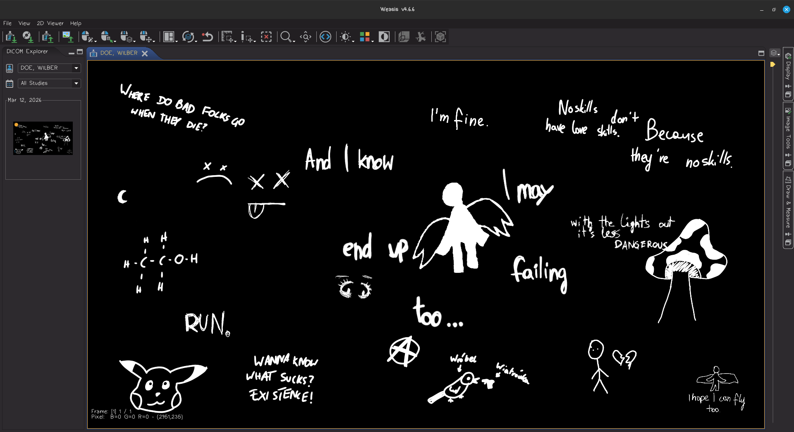

Czym jest DICOM?
DICOM (Digital Imaging and Communications in Medicine) to standard techniczny służący do przechowywania i przesyłania informacji medycznych, szczególnie zdjęć radiologicznych.

(Digital Imaging and Communications in Medicine appreciation site)
DICOM (Digital Imaging and Communications in Medicine) to standard techniczny służący do przechowywania i przesyłania informacji medycznych, szczególnie zdjęć radiologicznych.
